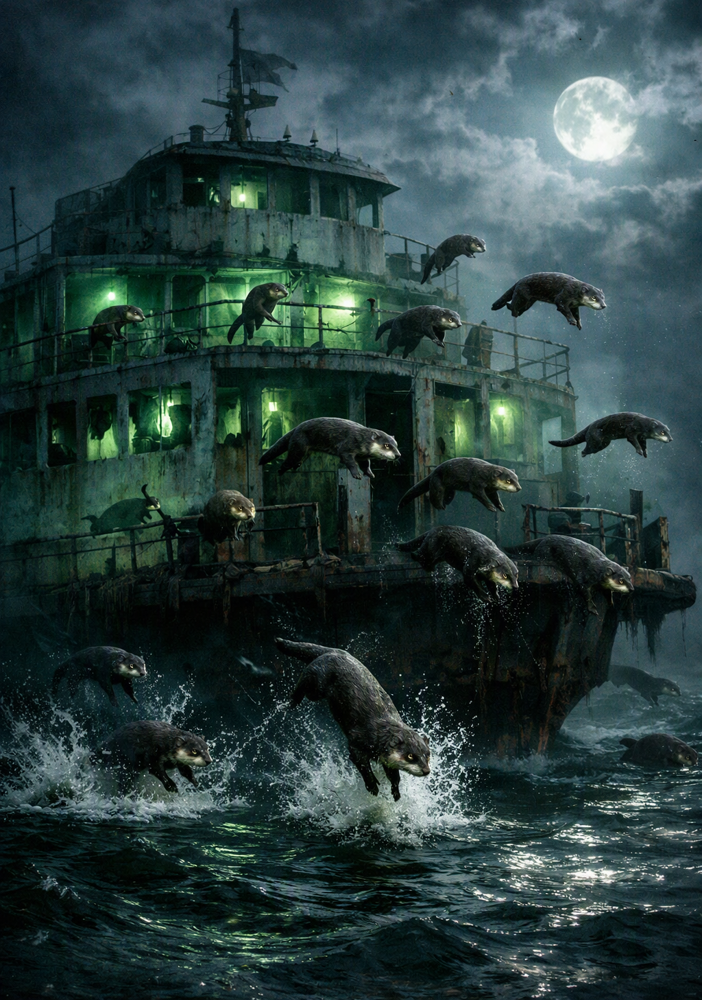

Ręczny prom na linie między Brzegiem Górnym a Kępą Łąkową,
przez rzekę Mętną. Przeprawa trwa około 6 minut.
Prom zabiera 12 osób i 2 rowery; nie przewozi samochodów
ani motocykli.
Kursujemy od 1 maja do 30 września. Przy wysokiej wodzie
prom stoi: aktualny stan rzeki podaje
serwis hydrologiczny IMGW.

Zdjęcie wygenerowane za pomocą AI
Komunikaty
Nowa lina prowadząca
Wymieniamy linę prowadzącą. Sezon zacznie się zgodnie z planem.
Szerszy trap w Kępie Łąkowej
Przy kładce w Kępie Łąkowej stanął nowy, szerszy trap.
Rowery wprowadza się bez zdejmowania sakw.
Jak się przeprawić
Zadzwonić dwa razy dzwonem na słupie przy kładce.
Poczekać, aż przewoźnik podpłynie i przycumuje prom.
Wejść na prom po trapie.
Postawić rower przy burcie, trzymać go za kierownicę i usiąść na ławce.
Zapłacić przewoźnikowi przed odbiciem od brzegu.
Wysiąść na drugim brzegu na znak przewoźnika.
Na promie nie wolno
wchodzić z psem bez smyczy,
stać przy linie,
skakać z promu do wody,
wnosić szkła,
płynąć dzieciom do lat 10 bez opieki dorosłego.
Słowniczek przeprawy
Przewoźnik
Osoba, która prowadzi prom i odpowiada za pasażerów.
Trap
Pomost między brzegiem a promem.
Lina prowadząca
Stalowa lina nad rzeką, po której prom przesuwa się z brzegu na brzeg.
Cumowanie
Przywiązanie promu do brzegu.
Kępa
Wyspa albo kawałek lądu, który przy wysokiej wodzie bywa zalewany.